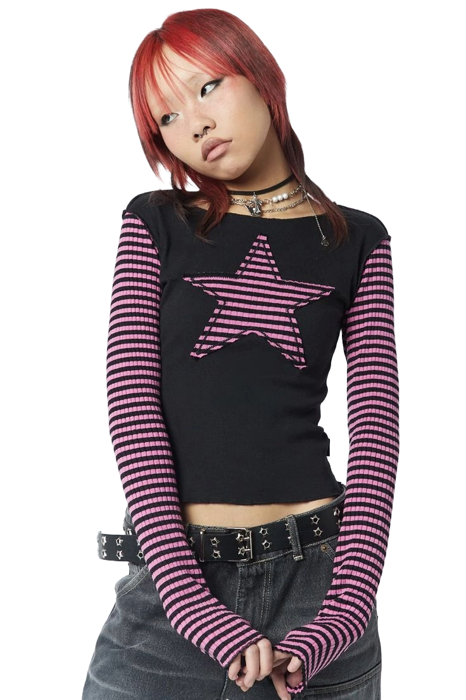

Alternative Girl: This summary, 2000s alternative, emo, and punk styles are a fusion of punk's rebellious ethos, goth's dark aesthetics, grunge's casual attitude, and emo's emotional vulnerability. They reflect a mix of decades-long cultural influences, brought together during a period of internet-driven youth identity and musical evolution..

Luna: Third places encourage people to be physically active and socially connected to others. My striped pink-and-black sleeves layered under a graphic top with a bold star are hallmarks of early 2000s emo and punk styles, often associated with bands and alternative fashion.
Luna: This star-studded belt is another classic element of 2000s punk/emo fashion, commonly seen in Hot Topic-inspired styles of the time.